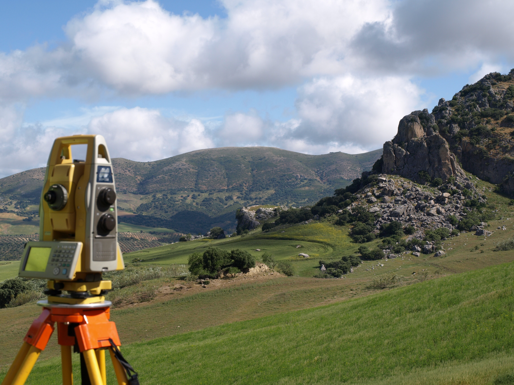
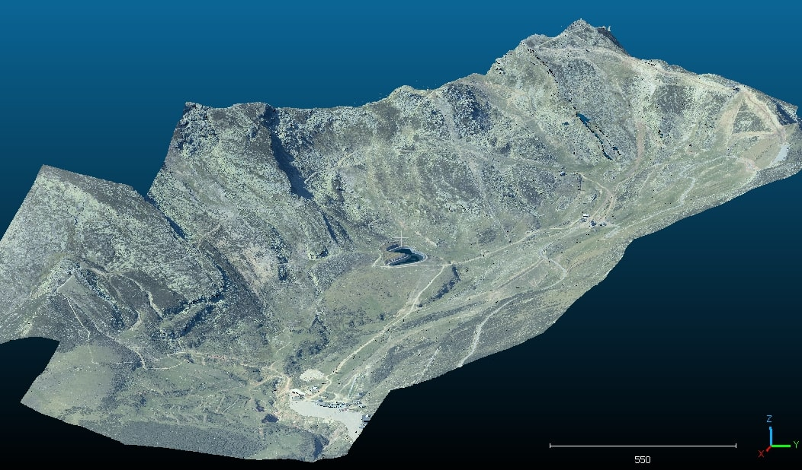

Bienvenido a GISanz
En GISanz utilizamos tecnología de drones de última generación para brindarte servicios de topografía, mapeos 3D y análisis geoespacial con máxima precisión y rapidez.
Nuestros Servicios

Levantamientos Topográficos
Mediciones precisas en terrenos complejos.

Modelos 3D
Reconstrucción de entornos en alta definición.
Georreferenciación
Mapeo detallado y adaptado a tus necesidades.
Sobre Nosotros
Somos una empresa líder en ingeniería en topografía y geomática. Combinamos experiencia técnica con herramientas innovadoras para entregar resultados confiables y adaptados a cada cliente.
Contáctanos
O llámanos al: +34 626304435